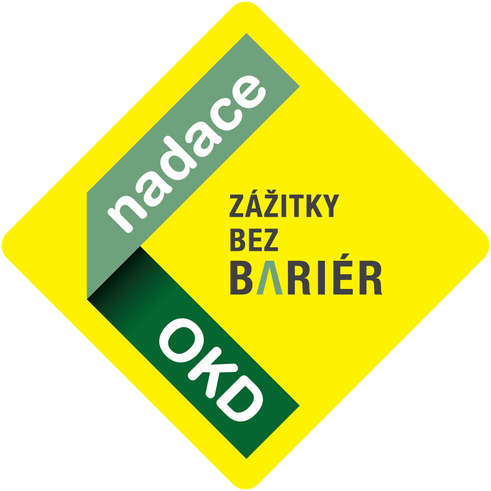
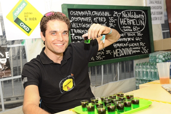
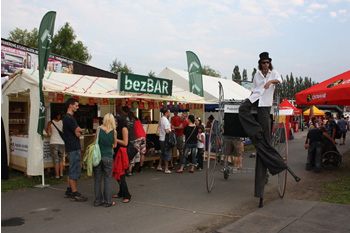
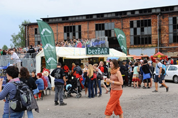
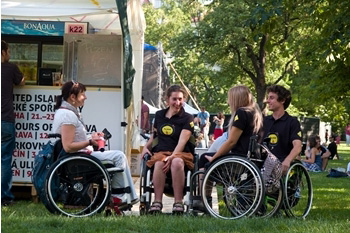
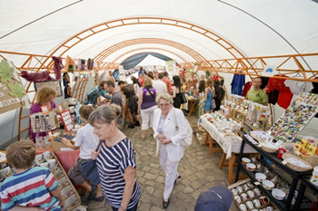
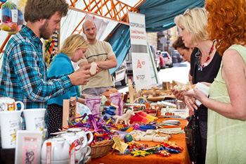

Jednou z hlavních priorit podporovaných Nadací OKD je integrace hendikepovaných do pracovního procesu. Každoročně tak podporuje desítky chráněných dílen, které mohou zaměstnávat osoby se zdravotním postižením od vozíčkářů přes diabetiky, astmatiky nebo osoby po úrazech.

Jelikož nejen práce, ale i odpočinek jsou důležitou složkou života, podílí se nadace také na zpřístupňování kulturních, sportovních a jiných společenských akcí osobám se zdravotním postižením, zkráceně Zážitky bez bariér. Hlavní osou jsou hudební či divadelní festivaly, kde mohou vozíčkáři i jinak znevýhodnění návštěvníci zažít servis, který jim umožní užívat si zážitky plnými doušky. Jedná se o technické úpravy areálu, bezbariérovou přepravu, snížené vstupné nebo odborné asistenty. Tyto služby jsou vždy "šity na míru" dané akci po dohodě s organizátorem. Nadace tak tyto úpravy sama nerealizuje, ale poskytuje finanční příspěvek samotným organizátorům. Cílem není vytvářet izolované akce jenom pro hendikepované, ale začlenit je více do "běžné" společnosti.
U akcí, které byly podpořeny nadací v rámci grantových výzev, a které měli potenciál "vydělat si na sebe", poskytla nadace nad rámec spolupráce tzv. bezBAR. Jedná se o unikátní bezbariérový bar, v němž hosty obsluhuovali vozíčkáři, mimo jiné i Muž roku 2009 Martin Zach. Připravovali chutné drinky a prodávali i výrobky z chráněných dílen. Naši bezBARmani i bezBARmanky poskytli profesionální barmanské služby a díky tomu měli zajištěnou slušně placenou brigádu. Důležitější je ovšem propojení "světa" zdravých a postižených. Bariéry totiž nemívají pouze podobu vysokého nájezdu na chodník, ty hlavní jsou v našich hlavách. bezBAR je tak poslem zprávy, že zaměstnávat hendikepované je správné a vyplácí se. Všem, kteří se poctivému sociálnímu podnikání věnují patří velký dík a uznání!
Partnery a pomocníky při realizaci bezBARu byly ART Prometheus, o.s. a Česká asociace paraplegiků. Výtěžek z bezBARu putoval na konto České asociace paraplegiků, která tak mohla efektivněji podávat první pomocnou ruku osobám po úrazu páteře.
Pokud jste se nestihli zúčastnit žádné z akcí v rámci Zážitků bez bariér, můžete si zakoupit výrobky od poctivých zaměstnavatelů osob se zdravotním postižením na portálu Práce postižených.
 |  |
 |  |
 |  |